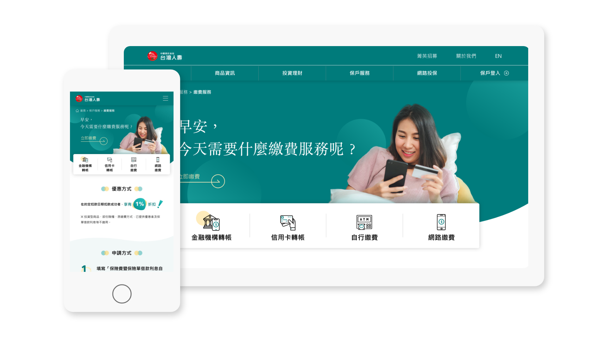
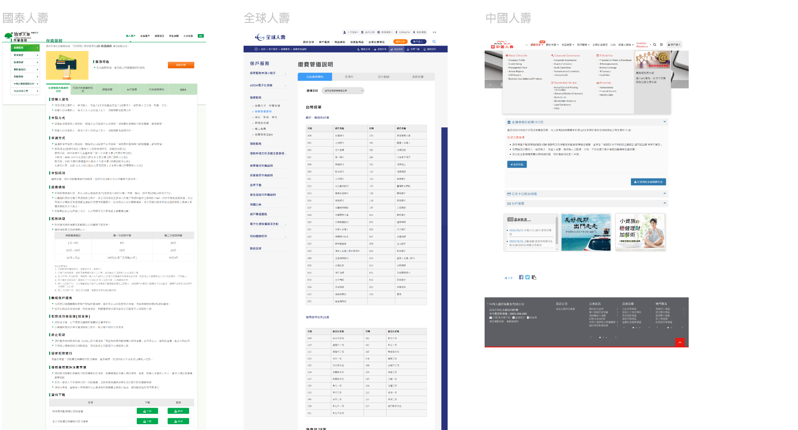
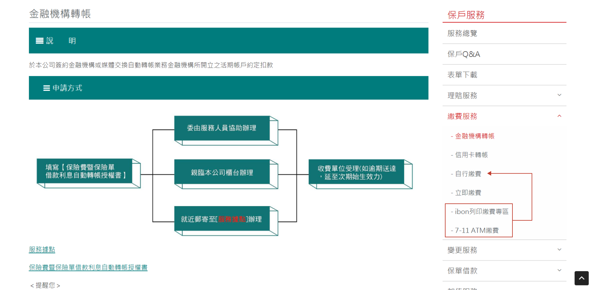
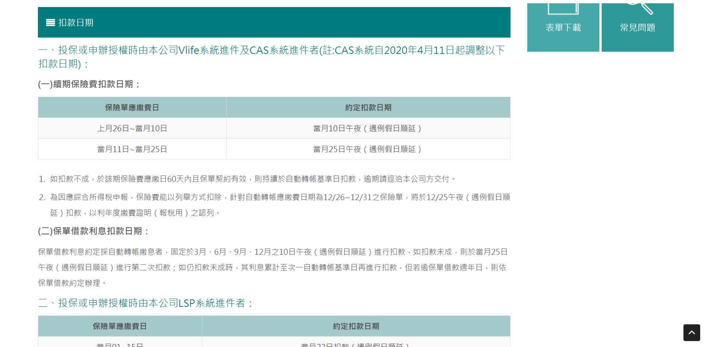
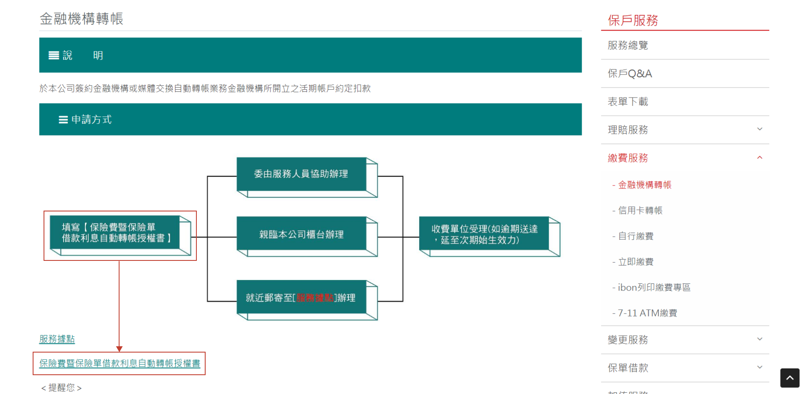
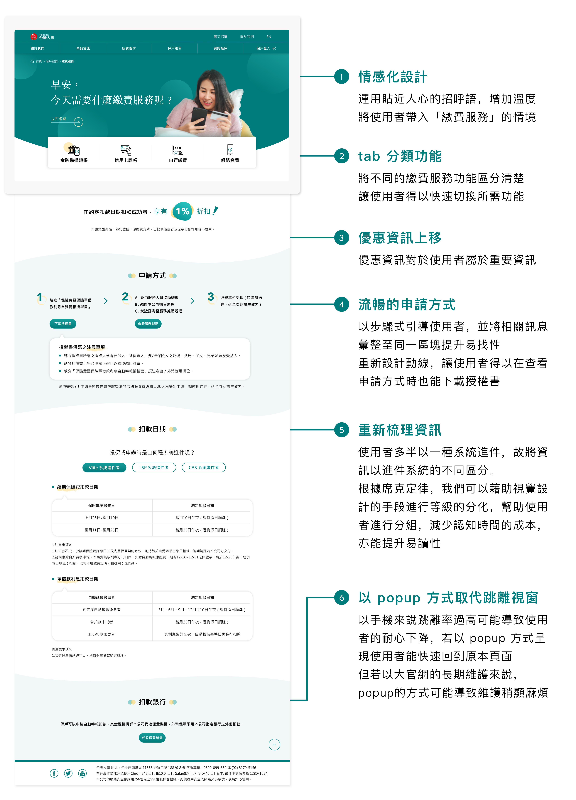

TaiwanLife Redesign
台灣人壽繳費服務 UX Research, UI Design | 2020
About Project
Description:
壽險業官網除了提供非保戶商品資訊外，也須重視保戶的售後服務，而保戶服務裡又以「理賠服務」及「繳費服務」為兩大主要功能，因此這次針對台灣人壽官網的繳費服務做進一步優化。
Role:
UX Research, UI Design
Deliverables:
Competitive Product Analysis
Problems
Analysis
Mockups
Software:
Sketch
Competitive Product Analysis
以國泰人壽、全球人壽、中國人壽為主要競品分析
由競品發現，這三間壽險多以 tab 的呈現區分繳費方式，以手機版來說可減少點擊次數；並以條列式呈現與清楚分類資訊，降低使用者的資訊負荷量。另外，國泰人壽是以申請方式、日期、扣款時間等的資訊以一頁式攤開來呈現；而全球人壽則是將申請方式、扣款日期等收置下拉式選單，讓使用者選擇需要哪些資訊。
在此可以探討當使用者查看繳費服務時，是以單一目的性導向，如：只想查看申請流程；還是以想了解該繳費服務下的所有相關資訊為目的。
→ 使用下拉式選單會增加點擊次數，當保戶想完成申請，可能必須點擊 6 次以上，且以資訊架構的命名檢視原則來看，這四項選項並無一致性的文法格式，較不適合收入下拉選單中，可能導致使用者不易找尋資訊。
→ 若採單頁式攤開的方式，以不熟悉此系統的使用者來說，將資訊全攤開來更能讓使用者順利完成目的，且若以手機版來說，以點擊取代向下"滑"，更符合使用者操作手機的習慣。但容易導致頁面過長，故需著重於資訊分類的設計，將易找性提高。
本次設計主軸：強化資訊的易讀性與易找性
Existing Problems
1. 資訊架構問題：
「ibon 列印繳費專區」及「7-11 ATM 繳費」與其他四個節點屬於不同階層，建議收納至「自行繳費」內。( 若屬於熱門功能可設置捷徑，此部分可能須由 GA 數據再次確認 )
2. 易讀性問題：
現有官網採大量文字的呈現方式，可能導致使用者不易閱讀。
3. 易找性問題：
授權書下載的按鈕不明顯，導致使用者在申請過程容易放棄。
4. 跳離率過高：
當保戶想填寫地址，查看「服務據點」時，會另開服務據點的分頁，若以手機瀏覽，跳離率過高可能導致使用者失去耐心；同樣的問題也出現在「代收保費機構」。
Design Concept
What I learned
這次僅針對單一功能進行優化練習，但壽險業官網相當龐大，若以整體官網來看同時也必須思考未來維護的問題，就以「服務據點」為例，目前官網是跳至另一分頁，雖以使用者角度來說跳離視窗容易降低體驗，但整個官網存在著許多服務據點的按鈕，若以 popup 方式呈現，當業主須新增服務據點時，維護成本相對提高許多。
透過此次的練習，提升了梳理資訊與洞察問題的能力。在競品分析的過程中，從分析資訊架構、動線規劃到視覺元素，了解壽險業官網的結構，從中發現問題並解決問題，提升使用者體驗。並帶入情感化設計，將原本大量文字的官網增添溫度，讓使用者來到台灣人壽有賓至如歸之感。